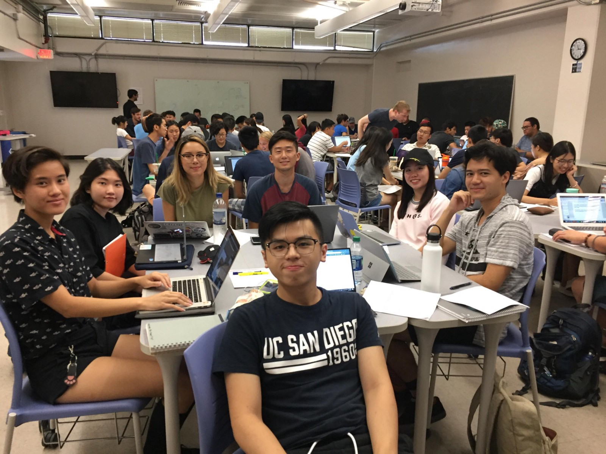
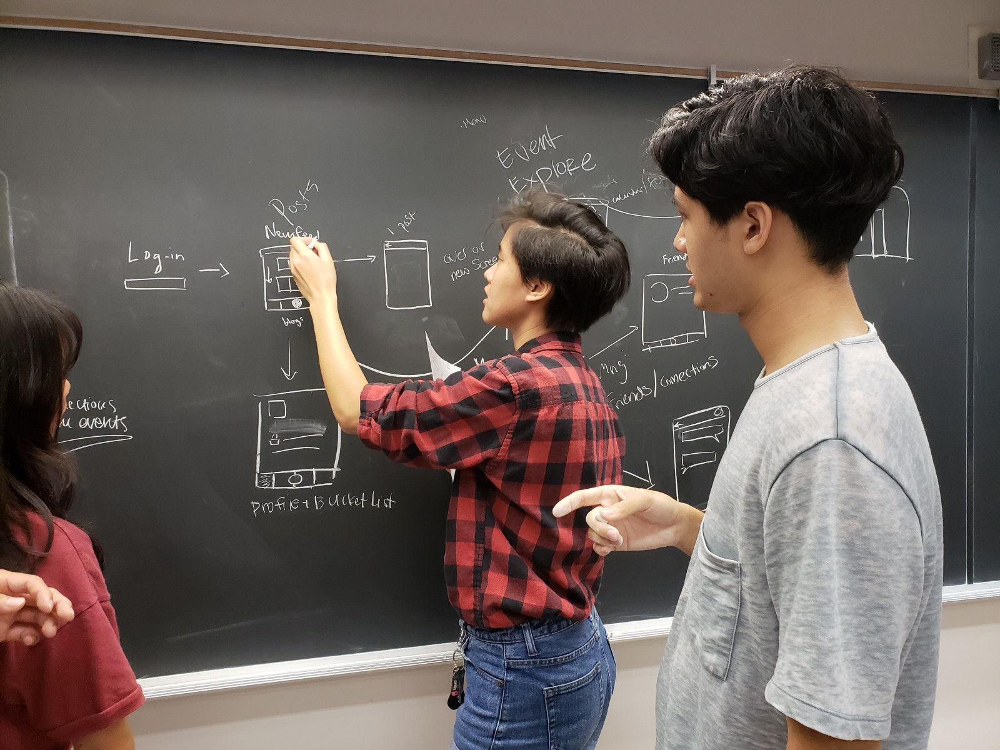

Put simply, Ripple is a bucket list app that mainly target users of the age group 50 to 80 years old. When our group and I were coming up with ideas, we identified a couple main problems that our target group often faced. More often than not, they will face boredom, loneliness, and lack of interaction with others.
We wanted to create an app that can motivate them to leave their comfort zones and participate in activities to spark up their daily lives. Because this process begins by taking small steps, one step and a time, we saw this as a type of ripple effect. As they participate in their first activity, they would begin to meet more people and become more inspired to continue carrying an active and social lifestyle.
Our app has three main features: (1) A user's bucket list, (2) The explore and search, (3) Bookmarks. The concept is simple and easy to understand. Upon signing up, the user would input basic profile information. Then as they explore possible activies through the explore page, they will begin to fill their bucket list, and thus begin to engage in activities.
Some of the problems we faced as we were coming up with the idea and the prototype was how to make the concept of the app rather focused and simple. Because our target group may not be exposed to social media as much as most millenials do nowadays, we had to take into consideration not to make assumptions that they would also know of and understand certain icons or popular app features. For example, we made sure to substitute or complement icons like the star or the bookmark icon with labels of the actual word. We also made sure to make a clear navigation bar versus swiping to get to certain pages, like in SnapChat. Choice of color, font, and layout were also adjusted to help facilitate better app usage.
If interested, do view our Medium posts to see more details of this project. Below is our video commercial and demo of the prototype of our application, Ripple.